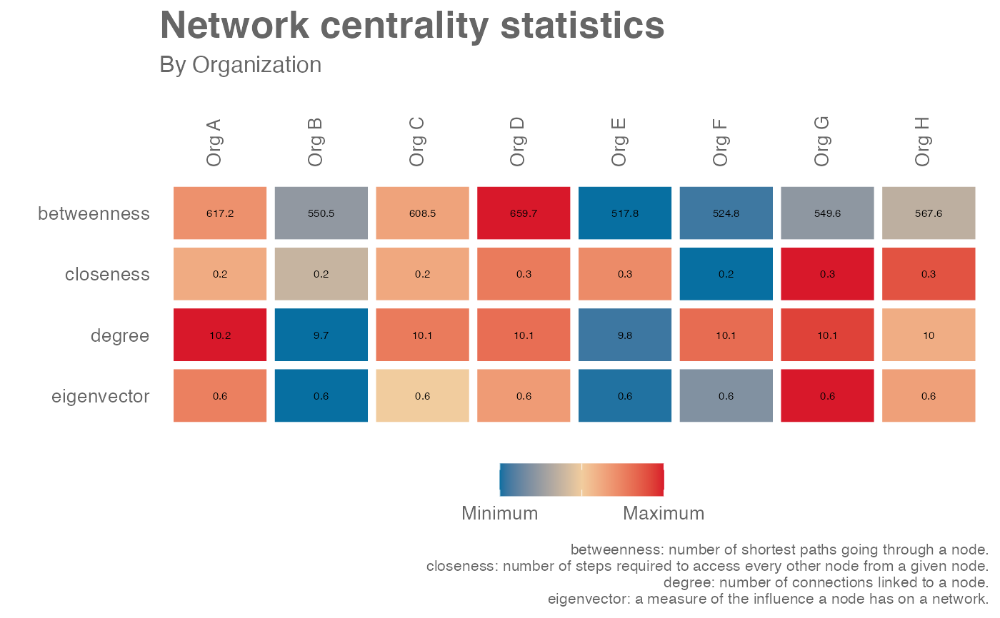

R/network_summary.R
network_summary.RdPass an igraph object to the function and obtain centrality statistics for each node in the object as a data frame. This function works as a wrapper of the centralization functions in 'igraph'.
network_summary(graph, hrvar = NULL, return = "table")'igraph' object that can be returned from network_g2g() or
network_p2p()when the return argument is set to "network".
String containing the name of the HR Variable by which to split
metrics. Defaults to NULL.
String specifying what output to return. Valid inputs include:
"table"
"network"
"plot"
See Value for more information.
By default, a data frame containing centrality statistics. Available statistics include:
betweenness: number of shortest paths going through a node.
closeness: number of steps required to access every other node from a given node.
degree: number of connections linked to a node.
eigenvector: a measure of the influence a node has on a network. Please refer to the igraph package documentation for the detailed technical definition.
When "network" is passed to "return", an 'igraph' object is returned with
additional node attributes containing centrality scores.
When "plot" is passed to "return", a summary table is returned showing
the average centrality scores by HR attribute. This is currently available if
there is a valid HR attribute.
Other Network:
external_network_plot(),
g2g_data,
internal_network_plot(),
network_describe(),
network_g2g(),
network_leiden(),
network_louvain(),
network_p2p(),
p2p_data_sim()
# Simulate a p2p network
p2p_data <- p2p_data_sim()
g <- network_p2p(data = p2p_data, return = "network")
# Return summary table
network_summary(graph = g, return = "table")
#> # A tibble: 300 × 5
#> node_id betweenness closeness degree eigenvector
#> <chr> <dbl> <dbl> <dbl> <dbl>
#> 1 SIM_ID_1 0 0.225 10 0.588
#> 2 SIM_ID_2 58.0 0.233 12 0.685
#> 3 SIM_ID_4 140. 0.239 9 0.587
#> 4 SIM_ID_5 262. 0.238 11 0.681
#> 5 SIM_ID_6 290. 0.222 11 0.687
#> 6 SIM_ID_7 115. 0.201 10 0.639
#> 7 SIM_ID_8 201. 0.219 10 0.643
#> 8 SIM_ID_9 283. 0.228 11 0.700
#> 9 SIM_ID_10 110. 0.217 10 0.646
#> 10 SIM_ID_12 444. 0.232 11 0.650
#> # … with 290 more rows
# Return network with node centrality statistics
network_summary(graph = g, return = "network")
#> IGRAPH d6c651f DNW- 300 1500 --
#> + attr: weight (g/n), name (v/c), Organization (v/c), betweenness
#> | (v/n), closeness (v/n), degree (v/n), eigenvector (v/n), weight (e/n)
#> + edges from d6c651f (vertex names):
#> [1] SIM_ID_1->SIM_ID_2 SIM_ID_1->SIM_ID_4 SIM_ID_1->SIM_ID_6
#> [4] SIM_ID_1->SIM_ID_207 SIM_ID_1->SIM_ID_296 SIM_ID_1->SIM_ID_297
#> [7] SIM_ID_1->SIM_ID_298 SIM_ID_1->SIM_ID_299 SIM_ID_1->SIM_ID_3
#> [10] SIM_ID_1->SIM_ID_300 SIM_ID_2->SIM_ID_4 SIM_ID_2->SIM_ID_6
#> [13] SIM_ID_2->SIM_ID_7 SIM_ID_2->SIM_ID_125 SIM_ID_2->SIM_ID_136
#> [16] SIM_ID_2->SIM_ID_294 SIM_ID_2->SIM_ID_297 SIM_ID_2->SIM_ID_298
#> [19] SIM_ID_2->SIM_ID_299 SIM_ID_2->SIM_ID_3 SIM_ID_2->SIM_ID_300
#> + ... omitted several edges
# Return summary plot
network_summary(graph = g, return = "plot", hrvar = "Organization")

# Simulate a g2g network and return table
g2 <- g2g_data %>% network_g2g(return = "network")
#> `time_investor` field not provided. Assuming `TimeInvestors_Organization` as the `time_investor` variable.
#> `collaborator` field not provided. Assuming `Collaborators_Organization` as the `collaborator` variable.
network_summary(graph = g2, return = "table")
#> # A tibble: 15 × 5
#> node_id betweenness closeness degree eigenvector
#> <chr> <dbl> <dbl> <dbl> <dbl>
#> 1 "Biz\nDev" 1.28 0.414 4 0.374
#> 2 "Customer\nService" 0 0.343 3 0.198
#> 3 "Facilities" 1 0.444 4 0.517
#> 4 "Finance-Corporate" 0 NaN 2 0
#> 5 "Finance-East" 8.83 0.571 6 0.847
#> 6 "Finance-South" 17.3 0.632 7 0.973
#> 7 "Finance-West" 4.67 0.522 5 0.715
#> 8 "Financial\nPlanning" 1.95 0.444 4 0.395
#> 9 "G&A\nCentral" 0 NaN 2 0
#> 10 "G&A\nEast" 0 0.387 3 0.269
#> 11 "G&A\nSouth" 22.8 0.6 8 1
#> 12 "Human\nResources" 12.6 0.5 6 0.735
#> 13 "IT-Corporate" 4.67 0.462 5 0.469
#> 14 "IT-East" 0.417 0.429 4 0.490
#> 15 "Inventory\nManagement" 12.5 0.545 7 0.922